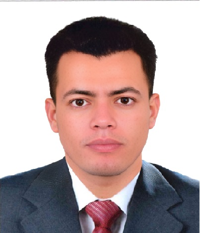

Omar AbdulAziz
Assistant IT Manager (About 6 Years Experience)

Whatsapp: (+2) 010 6543 8839:
Zanzibar : (+255) 785 436 863
Egypt: (+2) 011 1783 6042
Email: O_Aziz@outlook.sa
Summary
I am a certified IT & security professional from Google & IBM with a degree in Information Systems, graduated with honors. With proven leadership skills and a passion for using technology to drive business success, I am eager to take on new challenges in the IT field.
Education
B.S.C of MIS | May 2018 | Graduated with Excellent Grade
Certifications
- IBM Cybersecurity Analyst Professional
- IBM IT Support Professional
- Google IT Automation with Python Professional
- Google IT Support Professional
- Python for Everybody Specialization [University of Michigan]
- IBM Business Intelligence Analyst [2017]
- IBM Cloud Application Developer [2016]
COURSES
- CCNP Enterprise Core [ ENCOR 350-401 ]
- Cisco Certified Network Associate [ CCNA 200-301 ]
- Microsoft Certified Solutions Associate [ MCSA Core 2016 ]
- Bitdefender - Fortigate - Mikrotik - IAC Box
ERP System
- Hospitality: Opera PMS - Suite 8 - Comsys
- Wi-Fi Controller: Aruba - Omada - TP-Link
- E-DoorLocks: Visionline - Bis Hotel - Onity
- HR: Maestro - Payroll
- Accounting: Sun System - Material Control - Comsys
Examples of Leadership Skills
- Developed an IT Support System
Gained extensive knowledge in team leadership and managing large-scale projects through my role as an assistant to the IT manager.
- Assistant to the IT Manager
Gained extensive knowledge in team leadership and managing large-scale projects through my role as an assistant to the IT manager.
- Technology Support Specialist
My role as a technology support specialist at Aladdin Beach Resort in Hurghada enabled me to handle all electronic devices and network systems in a challenging work environment..
- Graduated with Honors in Information Systems
Graduating with honors in Information Systems reflects the extent of my technical skills..
Management Skills
- Managing IT Support Teams
Experienced in managing IT support teams and delivering excellent customer service.
- Technical Expertise
Proficient in network administration, systems management, and software development.
- Familiarity with IT Policies and Procedures
Knowledgeable in IT policies, procedures, and best practices for security, reliability, and scalability.
- Strong Problem-Solving Skills:
Possess strong problem-solving skills and the ability to think creatively to provide technical solutions.
References
-
Mr. Mohamed Al-Shater
Regional IT Manager for JAZ Hotels Worldwide, inside and outside Egypt
Phone & Whatsapp: +20 1020100333
-
Mr. Ashraf El-Dib
Regional IT Manager for JAZ Hotels in the Red Sea and Luxor, Egypt
Phone & Whatsapp: +20 1227858886
-
Mr. Karim Mohamed
IT Area Manager in Madinat Makadi
JAZ Hotel Group & Steigenberger Makadi & Iberotel Makadi Beach & TUI BLUE Makadi
Phone & Whatsapp: +20 1003591861
-
Mr. Islam Said
Assistant IT Area Manager in Madinat Makadi
JAZ Hotel Group & Steigenberger Makadi & Iberotel Makadi Beach & TUI BLUE Makadi
Phone & Whatsapp: +20 1000433968